April 13, 14, 15 ⋅ 2018
Create, code, and learn
with us in Porto
Join us in the playground for the future,
in the heart of Porto
Hackathon
First you make, then you break
Make or Break has a 3 day hackathon for everyone, divided into 2 main phases:
- Make: 2 days to develop a software project (maybe add some hardware 🤓)
- Break: showcase your project to all participants in a small fair
Apply and experiment with a new idea to win amazing prizes! (one per member of each category’s winning team)
We've got great mentors, food, and a kickass chill-out zone!
Prizes
One per member of each category’s winning team
-
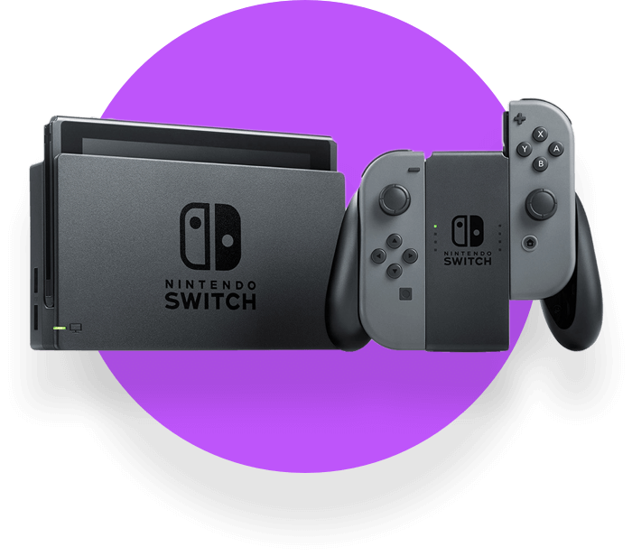
Fun
Nintendo Switch + 1 year of private GitHub
Play your favorite games anywhere and have some fun.
-
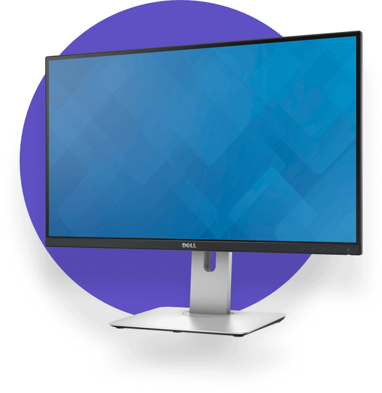
Useful
Dell Monitor U2515H + 1 year of private GitHub
Great for coding and design, with accurate colors and QHD resolution.
-
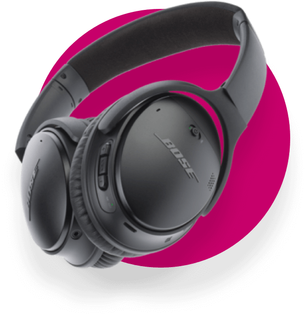
Creative
Bose QuietComfort 35 + 1 year of private GitHub
Turn the world off and let your creative juices flow.
Workshops
Come learn with us!
Make or Break is all about learning. Step out of your comfort zone and join us and many other developers. We'll feature a wide variety of experts and subjects so you can learn a bit of everything.
- 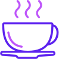 April 13, Friday, 10:30 How to prepare the perfect cup of coffee Hugo, Barista at "Chá das 5"
- April 13, Friday, 14:15 Don’t waste your time! UE4 performance tips Cristiano Carvalheiro, João Portela
- April 13, Friday, 17:15 Git 101: where have you been all my life? João Vale
- April 14, Saturday, 14:15 Let's Make TV António Proença Azevedo
-
 April 14, Saturday, 17:15
Up and running with Elixir
Luís Zamith
April 14, Saturday, 17:15
Up and running with Elixir
Luís Zamith
- 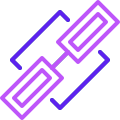 April 15, Sunday, 10:30 Forever On The Chain: Ethereum 101 Júlio Santos
Talks by G2PT
MoB is hosting the G2PT 63rd meetup!
Open to MoB participants, otherwise apply here.
- 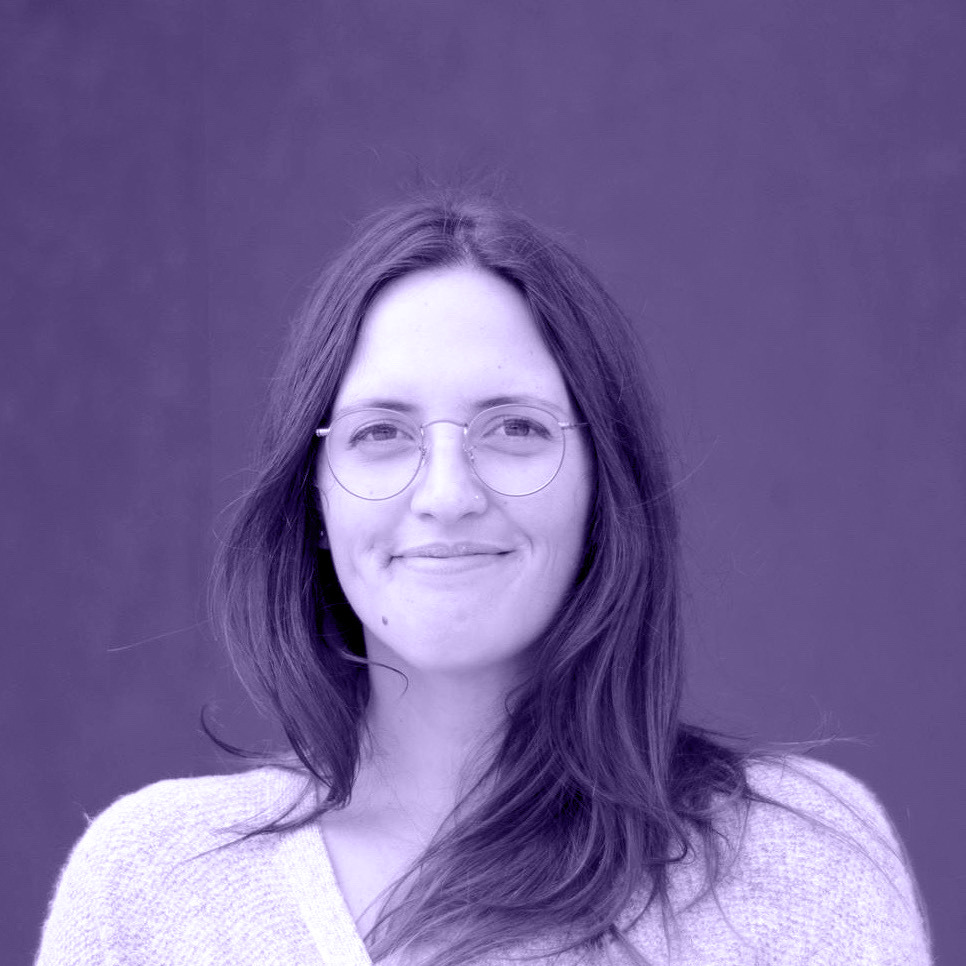 April 14, Saturday, 11:05 Design Thinking - how errors can teach us Why testing and failing is important, its impact on the future of technology and how it's improving people's lives. Filipa Lacerda
- 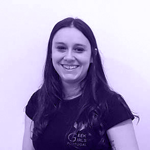 April 14, Saturday, 11:50 Information security best practices Change your ideas about information security while discussing the latest trends and advances in the industry. Cláudia Freitas
AI Competition
One bot to rule the board!
Starting March 2018 we will host an AI competition. You will be able to start experimenting during February.
The goal is to create an AI agent capable of playing a simple board game created for the competition.
You can develop it in a programming language of your choice (supported languages to be announced soon).
Hop on to our rules page to know more!
-
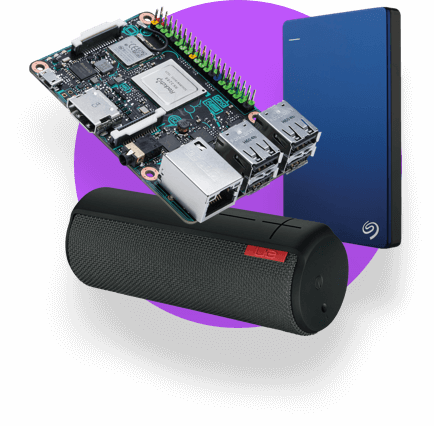
1st Place
Asus Tinker Board 2GB2.5" 1Tb HDD Seagate Backup Plus SlimUE BOOM 21 year of private GitHub - 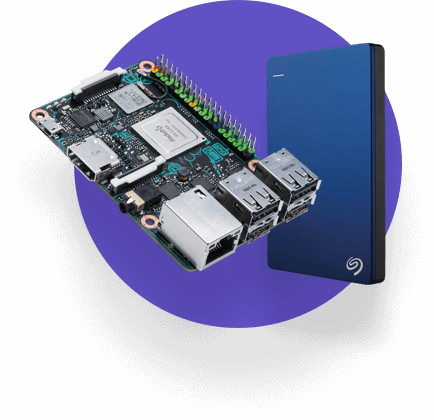
2nd Place
Asus Tinker Board 2GB2.5" 1Tb HDD Seagate Backup Plus Slim6 months of private GitHub -
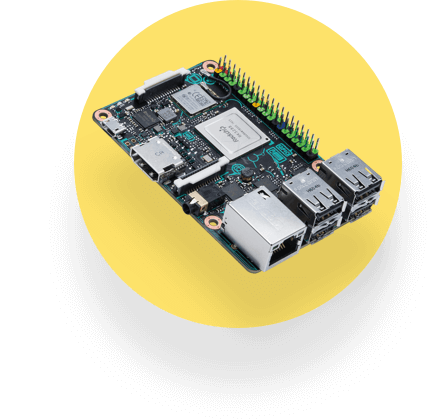
3rd Place
Asus Tinker Board 2GB3 months of private GitHub
A
Different
Kind of
Hackathon
It's dangerous
to go alone!
You can't participate in the Make or Break hackathon by yourself.
Join our Slack community and form a team with other participants.
Learn, join
forces and
develop
amazing
things
MoB Sessions
Talks curated by Make or Break
MoB Sessions is a series of talks curated by us, given by stunning people in some of Porto's coolest venues.
These sessions are meant to keep the Make or Break spirit alive and kicking during the months prior to the event itself.
The first session will happen in Blip, March 15th, after-work. Join us, entrance is free!
-
Bitcoin and Cryptocurrencies - From Zero to Hero
by Jorge Silva, March 15, 18:30 — Blip
Talk
Have you heard about the blockchain revolution?
Why is this Bitcoin thing important? What problems does it solve?
You might have heard about "Blocks", "Miners", "Hashes", "Private and Public Keys"...
Are you interested in knowing how everything fits together?
Get ready for a crash course about cryptocurrencies!Jorge Silva
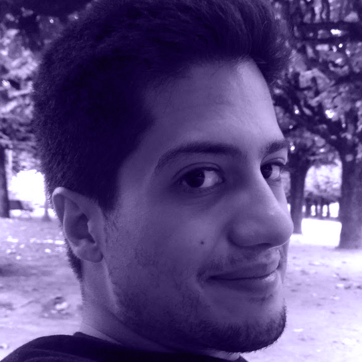I love to solve problems, discuss ideas and build exciting stuff.
Interested in Full Stack Development, DevOps, Distributed Systems and Software Architecture.
I strive to create simple and elegant solutions.
In the past, I've worked as a consultant and engineer for different sized companies.
I currently work at Blip on the Risk and Trading Team. -
G2PT: Women in Technology
by Vânia Gonçalves, March 15, 19:15 — Blip
Talk
Come meet the progress of the first portuguese community for women in tech, founded in 2010.
Vânia Gonçalves
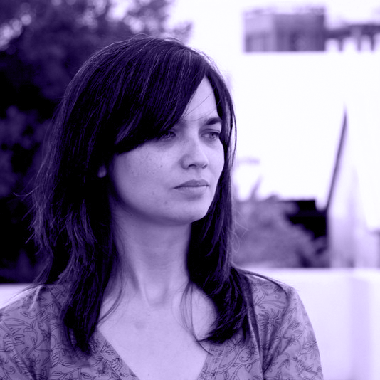Founder, Geek Girls Portugal (G2PT)